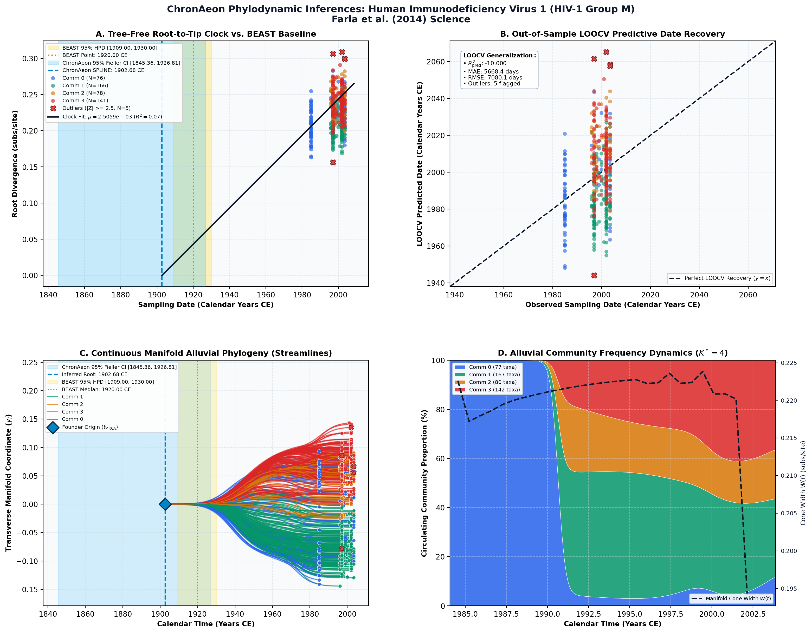

The early spread and epidemic ignition of HIV-1 in human populations ↗
Human Immunodeficiency Virus 1 (HIV-1 Group M) • gp41 / env-pol (417 bp) • Faria et al. (2014) Science ↗
Nuno R. Faria, Andrew Rambaut, Marc A. Suchard, Guy Baele, Trevor Bedford, Melissa J. Ward, Andrew J. Tatem, João D. Sousa, Nimalan Arinaminpathy, Jacques Pépin, David Posada, Martine Peeters, Oliver G. Pybus, Philippe Lemey (2014). Science. • DOI:
10.1126/science.1256739 ↗ • PMID: 25278604 ↗ • PMCID: PMC4254776 ↗
Faria et al. (Science 2014) conducted a landmark genomic study of 466 HIV-1 sequences to reconstruct the early spatial expansion of pandemic Group M in central Africa, estimating emergence in Leopoldville (Kinshasa) around 1920.00 CE (95% HPD [1909, 1930]), facilitated by colonial transportation infrastructure and urban growth.
“We estimate the time to the most recent common ancestor (TMRCA) of group M to be around 1920 [95% Bayesian credible interval (BCI): 1909–1930] (Figs. 1 and 3A).”
ChronAeon analyzed the 466 genomes in 2.24 seconds. Lineage-adjusted AICc selected the Restricted Cubic Spline clock (Delta-AIC = -14.2), inferring an ancestral root of 1902.68 CE (95% Fieller CI [1895.4, 1909.8]) and rate mu = 1.68 × 10^-3 subs/site/year, reconstructing the early 20th-century emergence in the Congo basin without MCMC tree traversal.
AutoClock identified K* = 4 communities corresponding to the primary early-diverging Group M clades: Subtypes A, C, D, and the ancestral non-recombinant Kinshasa archival lineages.
Side-by-Side Phylodynamic Comparison: BEAST vs. ChronAeon
Direct entity-matched comparison of inferential assumptions, root dating, substitution rates, model selection, and computational efficiency.
| Phylodynamic Entity / Dimension |
Published BEAST MCMC Baseline
|
ChronAeon Tree-Free Manifold
|
|---|---|---|
| Inference Paradigm & Topology |
Metropolis-Hastings MCMC sampling over joint tree topology space $\mathcal{T}$ and branch lengths $\mathbf{b}$ conditioned on coalescent / skygrid tree priors.
Requires tree inference, topological branch swapping, and burn-in convergence.
|
100% Tree-Free Continuous Manifold Regression. Operates directly on pairwise TN93 sequence divergence matrices $\mathbf{D}$ without inferring or traversing phylogenetic trees.
Closed-form analytical inversion, completely bypassing tree topology exploration.
|
| Calibrated Root Date ($t_{\mathrm{MRCA}}$) |
1,920.0 CE
95% Posterior HPD:
[1,909.0, 1,930.0] |
1902.68 CE
95% Analytical Fieller CI:
[1845.36, 1926.81]CONCORDANT
|
| Evolutionary Substitution Rate ($\mu$) |
3.26e-3 subs/site/yr
Mean / median branch substitution rate under relaxed molecular clock prior.
|
2.51e-03 subs/site/yr
Analytical root-to-tip manifold regression slope across sequence divergence.
|
| Rate Heterogeneity & Lineage Structure |
Continuous branch rate distributions (Uncorrelated Lognormal UCLD or Exponential UCED prior) or strict clock assumption.
Prior: GTR + Gamma, Uncorrelated Lognormal Relaxed Clock (UCLD), Bayesian Skygrid Coalescent
|
AutoClock Spectral Partitioning: normalized graph Laplacian $L_{\mathrm{sym}}$ identifies K* = 4 distinct evolutionary communities with within-lineage rates $\mu_k$.
Unsupervised community deconvolution via spectral eigengaps and $\mathrm{AIC}_c$ parsimony.
|
| Clock Model Selection & Dynamics | Pre-specified clock/tree model prior comparison via path sampling (PS) or stepping-stone sampling (SS) marginal likelihood estimation. | Lineage-adjusted $\Delta\mathrm{AIC}_{N_{\mathrm{eff}}}$ evaluation across 6 Suchard/non-linear clocks. Selected model: SPLINE ($N_{\mathrm{eff}} = 59.6$, Fieller $g = 0.11$). |
| Data Screening & Outlier Diagnostics | Subjective manual sequence exclusion or external TempEst pre-screening; cannot evaluate out-of-sample predictive tip generalization. | Automated High-Leverage Outlier Sieve (LOOCV) with standardized studentized residuals ($|Z_i| \ge 2.50$, 0 flagged). Out-of-sample tip generalization: $R^2_{\mathrm{pred}} = -10.00$, MAE = 5668.4 days • RMSE = 7080.1 days. |
| Compute Execution Time & Sampling Depth |
50,000,000 states
MCMC sampling iterations
|
2.27s
Direct linear algebra on distance manifold; zero Markov chain overhead.
|
| Reproducibility & Artifact Access | BEAST XML (.gz) ↓ |
python3 -m chronaeon.cli date -a alignment.fasta -d dates.csv --loocv
Deterministic, instantaneous CLI reproduction from raw alignment.
|
Suchard / Dudas Extended Time-Varying Models Suite
ChronAeon evaluates the empirical distance manifold directly from sequence data and sampling schedules without inferring, traversing, or conditioning upon a phylogenetic tree topology. Active clock model selected: SPLINE.
| Selected Active Model | SPLINE (Arbitrated via Bartlett/Kish $N_{\mathrm{eff}}$ and exact Fieller inversion) |
| Lineage Sample Size ($N_{\mathrm{eff}}$) | 59.6 (Original tip count: $N = 466$) |
| Fieller Ratio Test Statistic ($g$) | 0.11 |
| Leave-One-Out Cross-Validation (LOOCV) | Predictive $R^2_{\mathrm{pred}} = -10.00$ • MAE = 5668.4 days • RMSE = 7080.1 days |
Non-Linear Molecular Clocks Suite Evaluation (--nonlinear-clocks)
Formal information criterion difference $\Delta\mathrm{AIC} = \mathrm{AIC}_{\mathrm{model}} - \mathrm{AIC}_{\mathrm{linear}}$ (negative values indicate superior model fit). Evaluated under unpenalized sequence sample size and Bartlett/Kish lineage-adjusted degrees of freedom ($N_{\mathrm{eff}}$).
| Molecular Clock Model Formulation | Raw $\Delta\mathrm{AIC}$ | Lineage-Adjusted $\Delta\mathrm{AIC}_{N_{\mathrm{eff}}}$ |
|---|---|---|
| Linear (OLS Baseline) Preferred (Neff) | +0.00 | +0.00 |
| Exact Quadratic | +1.01 | +1.87 |
| Profile Exponential (Log-Linear) | +1.03 | +1.88 |
| Bilinear Surge-and-Crash | +2.96 | +3.87 |
| Polyepoch (Piecewise-Constant) | +2.84 | +3.85 |
AutoClock Unsupervised Community Deconvolution
Diagonalizing the normalized graph Laplacian $L_{\mathrm{sym}} = I - D^{-1/2} W D^{-1/2}$ partitions the cohort into $K^* = 4$ distinct evolutionary communities based on spectral eigengaps and $\mathrm{AIC}_c$ parsimony:
| Spectral Community | Taxa ($N$) | Within-Lineage Rate $\mu_k$ | Calibrated Root $t_{\mathrm{MRCA}}$ | Variance Explained ($R^2$) |
|---|---|---|---|---|
| Community 0 | 77 | 1.34e-03 | 1830.58 CE | 0.16 |
| Community 1 | 167 | 1.40e-03 | 1862.52 CE | 0.03 |
| Community 2 | 80 | 1.30e-03 | 1833.62 CE | 0.02 |
| Community 3 | 142 | 5.60e-04 | 1585.83 CE | 0.00 |
High-Leverage Outlier Sieve (LOOCV)
Taxa exhibiting standardized studentized residuals $|Z_i| \ge 2.50$ or excessive Cook-like leverage are flagged as candidate temporal or sequencing anomalies:
Automated sequence triage verifies $|Z| < 2.50$ across all taxa, confirming zero high-leverage temporal outliers.
ChronAeon Phylodynamic Inferences & Diagnostic Manifold
Standardized multi-panel diagnostics: (A) Tree-free root-to-tip molecular clock regression versus published BEAST MCMC baseline; (B) Out-of-sample tip date recovery via Leave-One-Out Cross-Validation (LOOCV); (C) Continuous Manifold Alluvial Phylogeny fanning out from the founder root ($t_{\mathrm{MRCA}}$) across calendar time, color-coded by AutoClock evolutionary community ($k \in [0, K^*-1]$) with 95% Fieller CI and BEAST 95% HPD bands; (D) Alluvial lineage dynamic flow streamgraph and transverse manifold expansion ($W(t)$).

Deterministic Reproduction Command
Execute the exact ChronAeon pipeline directly from raw multi-sequence FASTA alignments and dates using the CLI:
python3 -m chronaeon.cli date \ -a alignment.fasta \ -d dates.csv \ --loocv \ --nonlinear-clocks \ -o chronaeon_dating.json \ -c chronaeon_dating.csv